Created by Nymyh - License AGPL-3.0 | Content License | GitHub Repository
This section, as the name says, contains several tutorials made by me. At the moment we only have 4 available (Under construction), but I'm going to do more at some point.
How to Install and Configure Tor BrowserI'll show you how to install SearXNG locally on your computer without having to open a public instance.
How to Install and Configure C# on Void Linux BashHere I teach the installation of dotnet on Void Linux and its Bash configuration.
Tor Browser installation tutorial in LinuxTor Browser installation and configuration steps.
Clean Void LinuxHow to clean Void Linux using the terminal.